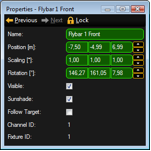
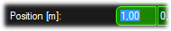

|  | The Property window informs about the properties of the actual selected object like fixtures or 3D objects. If several objects are selected e.g. via 'Ctrl + mouse’ only the fields with equal information are filled, other fields are cross striped. You can change the settings of one or all selected objects here. |
|  | Numerical values can be in- or decremented via the mouse wheel (+Ctrl or +Shift) if the field is selected. Units can be changed in the Assets tree at 'Ma Net’ see above. Also the sizes can be changed absolute or as scaling factor. This can be done via the menu entry 'View - Units’ |